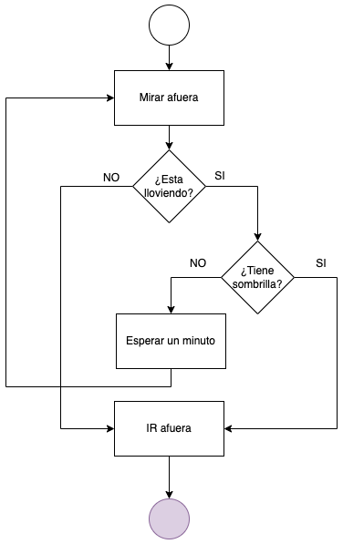

Guía 1123: Control de flujo¶
|
|

Exploración Estructuración Actividad práctica Transferencia
Temática: Control de flujo y estructuras condicionales en Python.
Objetivo de aprendizaje: Comprender y aplicar operadores de comparación, operadores lógicos y estructuras de control (if, elif, else) para desarrollar programas capaces de tomar decisiones basadas en condiciones.
DESEMPEÑO: Demuestra comprensión y aplicación efectiva de estructuras de control de flujo en Python, utilizando operadores lógicos y condicionales para desarrollar programas que toman decisiones basadas en diferentes condiciones, mostrando capacidad para resolver problemas prácticos como cálculos y validaciones.
Componente: Solución de problemas con T&I.
Competencia: Propongo innovaciones tecnológicas e informáticas para la solución de problemas dando cumplimiento a restricciones, condiciones y especificaciones técnicas y contextuales.
Evidencia de aprendizaje: Propongo, analizo y comparo diferentes soluciones a un mismo problema de la tecnología o la informática, explicando su origen, ventajas y dificultades.
Actividades desarrolladas en su totalidad.
Participación en clase.
Explicación clara de conceptos.
Argumentación de ideas.
Cumplimiento de las reglas del aula.
Plan de refuerzo 03.pdf Descargar
Mensaje del autor¶
“El propósito de esta guía es proporcionar las herramientas fundamentales para que el estudiante supere la ejecución lineal de sus algoritmos y comience a desarrollar soluciones capaces de evaluar condiciones y tomar decisiones autónomas. A través del dominio de los operadores lógicos y las estructuras condicionales, se busca fortalecer el pensamiento computacional y la capacidad de resolución de problemas complejos”.
—Camilo Fonseca
Control de flujo¶
Un programa no solo es la ejecución lineal de instrucciones paso a paso. Basado en como ciertas expresiones se evalúan, un programa puede decidir que instrucciones seguir, repetir o seleccionar alguna de varias.
El siguiente gráfico muestra un control de flujo para determinar que se debe hacer, en caso de llover.
 Diagrama de flujo¶ |
{kind=link}
A diferencia de los valores enteros, float (reales) y strings (cadena) los cuales pueden tener un número ilimitado de posibles valores, los valores booleanos solo tienen 2 posibles valores y estos son: True y False. Los valores booleanos también se almacenan en variables. Por ejemplo:
1valorPositivo = True
2valorNegativo = False
Operadores de comparación¶
Los operadores de comparación comparan dos valores y su evaluación resulta en un valor True o False. A continuación se muestran los operadores que se trabajan en Python:
Operador |
Significado |
|---|---|
|
Igual a |
|
No igual a |
|
Mayor que |
|
Menor que |
|
Mayor o igual que |
|
Menor o igual que |
==(igual a) se evalúa como Verdadero cuando los valores en ambos lados son iguales.!=(no igual a) se evalúa como Verdadero cuando los dos valores son diferentes.Los operadores
==y!=pueden trabajar con valores de cualquier tipo de datos.Los operadores
<,>,<=y>=, funcionan correctamente sólo con valores enteros y de coma flotante.
NO CONFUNDIR el operador (==) con el operador (=)
El operador == (igual a) tiene dos signos iguales, mientras que el operador = (asignación) tiene solo un signo igual.
Operadores booleanos¶
Los operadores booleanos se utilizan para comparar operaciones booleanas. Estos operadores son: and, or y not. Los operadores and y or siempre toman dos valores para evaluar. El operador not, solo toma un valor para evaluar.
A continuación se muestran las tablas de la verdad para cada operador:
Operador AND |
Resultado |
|---|---|
True and True |
True |
True and False |
False |
False and True |
False |
False and False |
False |
Operador OR |
Resultado |
|---|---|
True or True |
True |
True or False |
True |
False or True |
True |
False or False |
False |
Operador Not |
Resultado |
|---|---|
Not True |
False |
Not False |
True |
Dado que los operadores de comparación evalúan valores booleanos, se puede utilizar en expresiones con operadores booleanos. Los operadores and, or y not se denominan operadores booleanos porque siempre operan con los valores booleanos True y False.
El orden de operación con valores booleanos es el siguiente: Primero se evalúan los operadores matemáticos y de comparación, luego Python evalúa primero los operadores not, luego los operadores and y por último los operadores or.
Declaración if()¶
La declaración if() en PYTHON es una declaración condicional que permite ejecutar un bloque de código siempre y cuando una condición sea verdadera. Si la condición es falsa, entonces el bloque de código se omite.
En Python, una declaración if() consta de lo siguiente:
La palabra reservada if.
Una condición (es decir, una expresión que se evalúa como Verdadero o Falso).
Dos puntos (:)
La siguiente línea de código debe empezar con un bloque con sangría.
Ejemplo:
1nombre = input("Digite su nombre: ")
2if(nombre=="camilo"):
3 print("Usted se llama Camilo")
4
5print("adios")
Declaración else()¶
Una cláusula if puede ir seguida de una declaración else. La cláusula se ejecuta solo cuando la condición de la declaración if es Falsa. Una declaración else podría leerse como:
“Si esta condición es verdadera, ejecute este código. SI NO, ejecute este otro código”.
Una declaración else no tiene una condición, y en el código, una declaración else siempre consta de lo siguiente:
La palabra reservada else.
Dos puntos (:)
Comenzando en la siguiente línea, un bloque de código con sangría.
Ejemplo:
1nombre = "julian"
2
3if(nombre == "camilo"):
4 print("hola " + nombre)
5else:
6 print("usted no es camilo")
Declaración elif()¶
La declaración elif() siempre sigue a una declaración if() u otra declaración elif(). Se proporciona otra condición que se verifica sólo si todas las condiciones anteriores eran falsas. En código, una declaración elif() siempre consta de lo siguiente:
La palabra clave elif.
Una condición (es decir, una expresión que se evalúa como Verdadero o Falso)
Dos puntos (:)
La siguiente línea comienza con un bloque de código con sangría.
Ejemplo:
1calificacion = input("Ingrese la calificación (1-5): ")
2
3calificacionFloat = float(calificacion)
4
5if(calificacionFloat > 0.0 and calificacionFloat <= 2.9):
6 print("PERDIO")
7elif(calificacionFloat==3):
8 print("PASO RASPANDO")
9elif(calificacionFloat >= 3 and calificacionFloat <= 5):
10 print("APROBO")
11else:
12 print("FUERA DE RANGO")
A00: Introducción (5%)¶
Exploración
TRANSCRIBA en su cuaderno el objetivo, las orientaciones curriculares y los criterios de evaluación de la presente guía.
Lea el mensaje del autor y en su cuaderno responda:
¿Qué ventajas tienen los programas que usan condicionales en su algoritmia?
A01: Taller (10%)¶
Estructuración
Responda las siguientes preguntas en su cuaderno:
¿Para que sirve tener un control de flujo en un programa?
¿Por qué los valores booleanos se usan para tomar decisiones?
¿En que se diferencian los valores booleanos de los valores enteros, flotantes y de cadena o strings?
¿Cuáles son los operadores de comparación?
¿Cuál es la diferencia entre los operadores matemáticos, operadores de comparación y los operadores booleanos?
Al momento de realizar operaciones booleanas, ¿Cuál es el orden de operación de valores booleanos?
¿Para que sirven las declaraciones if() en PYTHON?
¿De qué se compone un declaración if()?
¿Para que sirven la declaración else en PYTHON?
¿De qué se compone una declaración else?
¿Puede una declaración else funcionar sin una declaración if()?
Para que sirve la declaración elif()?
¿De qué se compone la declaración elif()?
¿Existe un límite para la cantidad de declaraciones elif() en un código?
Complete las siguientes frases:
Cuando los valores SON IGUALES,
==se evalúa como Verdadero. Por tanto cuando los valores NO SON IGUALES,==se evalúa como: ___Cuando los valores SON IGUALES,
=!se evalúa como Falso. Por tanto cuando los valores NO SON IGUALES,=!se evalúa como: ___Si se quieren evaluar valores de cualquier tipo de datos, se usan los operadores: ___ y ___
Los operadores
<,>,<=y>=, solo funcionan correctamente con variables de tipo: ___
En su cuaderno escriba las tablas de la verdad de cada operador booleano.
A02: Consola interactiva (5%)¶
Actividad práctica
En una consola interactiva de PYTHON evaluar las siguientes operaciones.
En su cuaderno…
Escriba el resultado de cada operación.
42 == 42
42 == 99
2 != 3
2 != 2
“hello” == “hello”
“hello” == “Hello”
“dog” != “cat”
True == True
True != False
42 == 42.0
42 < 100
42 > 100
42 < 42
En una consola interactiva de PYTHON evaluar las siguientes operaciones booleanas.
En su cuaderno…
Escriba el resultado de cada operación.
(4 < 5) and (5 < 6)
(4 < 5) and (9 < 6)
(1 == 2) or (2 == 2)
(2 + 2 == 4) and not (2 + 2 == 5 ) and (2 * 2 == 2 + 2)
(2 + 99 <= 4) or (2 + 2 == 5) or (2 / 7 == 9 − 1)
A03: Uso de if() (5%)¶
Actividad práctica
Cree un archivo de nombre: G1123A03-nombresCortos.py, luego escriba y ejecute el siguiente código (no olvide escribir los comentarios iniciales):
1nombre = input("Digite su nombre: ") 2 3nombre_numeroCaracteres = len(nombre) 4 5if(nombre_numeroCaracteres < 6): 6 print("su nombre es corto") 7 8if(nombre_numeroCaracteres == 6): 9 print("su nombre tiene 6 caracteres") 10 11if(nombre_numeroCaracteres > 6): 12 print("su nombre es largo") 13 14print("adios")
En su cuaderno…
Responda las siguientes preguntas:
¿De qué trata el código?
¿Qué pasa en la consola si ingresa un nombre menor a 6 caracteres?
¿Qué pasa en la consola si ingresa un nombre mayor a 6 caracteres?
MODIFIQUE el código G1123A02-nombresCortos.py de tal forma que el número de caracteres no sea 6, sino el que usted considere.
Guarde los cambios y cierre el IDE Thonny.
A04: Adivinar el nombre (5%)¶
Actividad práctica
CREE una programa de nombre: G1123A04-adivinarNombre.py que adivine el nombre de una persona previamente establecido. El programa debe tener las siguientes características:
Comentarios iniciales de identificación.
Crear una variable de tipo String con el nombre del usuario a adivinar.
El programa debe solicitar el nombre del usuario.
Contar el número de veces que el usuario intenta adivinar el nombre.
Si el usuario adivina el nombre, entonces mostrar un mensaje que diga: ADIVINO EL NOMBRE DESPUÉS DE {número de intentos}!!!
Guarde los cambios y cierre el IDE Thonny.
A05: Mayor de edad (5%)¶
Actividad práctica
Cree un archivo de nombre: G1123A05-mayorEdad.py, luego escriba y ejecute el siguiente código (no olvide escribir los comentarios iniciales):
1edadUsuario = input("Digite su edad: ") 2edadUsuarioEntero = int(edadUsuario) 3 4if(edadUsuarioEntero > 0 and edadUsuarioEntero < 18): 5 print("Usted es menor de edad") 6else: 7 print("Usted NO ES menor de edad") 8 9print("ADIOS")
En su cuaderno…
Responda las siguientes preguntas:
¿De qué trata el código?
¿Qué pasa en la consola si ingresa una edad menor a 18 años?
¿Qué pasa en la consola si ingresa una edad mayor a 18 años?
Modifique el código de G1123A05-mayorEdad.py de tal forma que identifique si un adolescente es menor o mayor de 14 años.
Guarde los cambios y cierre el IDE Thonny.
A06: Aprobar - Reprobar (5%)¶
Actividad práctica
CREE una programa de nombre: G1123A06-apruebaReprueba.py el cual solicite al usuario una calificación entre 1 y 5. Luego el programa determine si con esa calificación, el estudiante aprueba o reprueba. El programa debe tener las siguientes características:
Comentarios iniciales de identificación.
Solicitar al usuario la calificación.
Convertir el dato suministrado por el usuario de tipo string a tipo float (usar la función float())
Con las sentencias if-else, determine si el estudiante aprueba o reprueba.
Mostrar un mensaje que diga si el estudiante aprobó o reprobó.
GUARDE los cambios y cierre el IDE Thonny.
A07: Rango de edades (10%)¶
Actividad práctica
Cree un archivo de nombre: G1123A07-rangoEdad.py, luego escriba y ejecute el siguiente código (no olvide escribir los comentarios iniciales):
1edad = input("Ingrese su edad: ") 2 3edadInt = int(edad) 4 5if(edadInt > 0 and edadInt <= 5): 6 print("Usted está en la PRIMERA INFANCIA") 7elif(edadInt >= 6 and edadInt <= 11): 8 print("Usted está en la INFANCIA") 9elif(edadInt >= 12 and edadInt <= 18): 10 print("Usted está en la ADOLESCENCIA") 11elif(edadInt >= 19 and edadInt <= 35): 12 print("Usted está en la JUVENTUD") 13elif(edadInt >= 36 and edadInt <= 60): 14 print("Usted está en la ADULTEZ") 15elif(edadInt >= 61 and edadInt <= 127): 16 print("Usted está en la VEJEZ") 17else: 18 print("FUERA DE RANGO") 19 20print("adios")
En su cuaderno…
Responda las siguientes preguntas:
¿De qué trata el código?
¿Qué pasa en la consola si ingresa las siguientes edades?:
0
1
6
17
22
45
63
-12
120
1000
MODIFIQUE el código G1123A07-rangoEdad.py de tal forma que si el usuario ingresa un número negativo, entonces mostrar un mensaje que diga: “NO INGRESAR NÚMEROS NEGATIVOS”
MODIFIQUE el código G1123A07-rangoEdad.py de tal forma que si el usuario tiene más de 100 años, mostrar el mensaje: “HA VIVIDO SUFICIENTE!!!”
GUARDE los cambios y cierre el IDE Thonny.
A08: IMC (50%)¶
Transferencia
CREE un programa de nombre: G1123A08-IMC.py que calcule el índice de masa corporal de una persona. El programa debe tener las siguientes características:
Comentarios de identificación.
Solicitar al usuario su peso en kilogramos y estatura en metros.
Convertir los datos suministrados por el usuario de tipo string a tipo float (usar la función float())
Calcule el IMC con la siguiente formula:
- \[ IMC = {{peso(kg)} \over {altura (metros)^2}} \]
Muestre el IMC en pantalla.
Con sentencias if-elif-else, muestre en pantalla los siguientes mensajes de clasificación según sea el valor de su IMC:
IMC
Clasificación
Menor a 18.49
PESO BAJO
18.50 a 24.99
PESO NORMAL
25 a 29.99
SOBRE PESO
30 a 34.99
OBESIDAD LEVE
35 a 39.99
OBESIDAD MEDIA
Mayor a 40
OBESIDAD MÓRBIDA
Calcule el IMC para una persona que pese 635kg y una altura de 2.72 metros. Este valor será el límite máximo del IMC para cualquier persona. El IMC mínimo será de 1.
Si una persona tiene un IMC por fuera de los límites, entonces por defecto el programa mostrará un mensaje que diga: “ERROR en los datos. Revisar el peso y la estatura digitadas”.